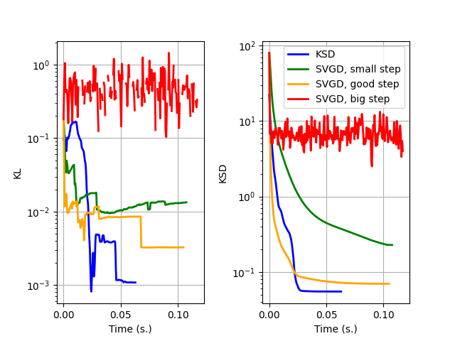

Note
Click here to download the full example code
Convergence speed of different methods¶
Out:
0.01
0 5.6337385177612305
100 1.3851721286773682
200 0.742489755153656
300 0.476571261882782
400 0.3292175829410553
500 0.23862040042877197
600 0.18179675936698914
700 0.14660955965518951
800 0.12327628582715988
900 0.1051359474658966
0.1
0 5.6337385177612305
100 0.08679559081792831
200 0.0181113351136446
300 0.004952159244567156
400 0.0024204242508858442
500 0.0016000890173017979
600 0.001189623842947185
700 0.0009511613170616329
800 0.0007994340849108994
900 0.0006950108800083399
10
0 5.6337385177612305
100 1.3166254758834839
200 1.1916536092758179
300 1.6853587627410889
400 1.88369619846344
500 1.2347859144210815
600 1.9262590408325195
700 2.2509191036224365
800 0.7538405656814575
900 1.1660879850387573
0.01
0 6.191356658935547
100 1.4234598875045776
200 0.7951967120170593
300 0.5210041403770447
400 0.3666558265686035
500 0.2689071595668793
600 0.2025153785943985
700 0.15543776750564575
800 0.12107110023498535
900 0.09545300900936127
0.1
0 6.191356658935547
100 0.07235073298215866
200 0.031043285503983498
300 0.009939097799360752
400 0.0036722077056765556
500 0.0024270706344395876
600 0.00207804748788476
700 0.0018011822830885649
800 0.0015244624810293317
900 0.0012732287868857384
10
0 6.191356658935547
100 1.3699065446853638
200 1.1888542175292969
300 1.483445644378662
400 1.23753023147583
500 1.3491803407669067
600 1.41788649559021
700 1.0538229942321777
800 1.417295217514038
900 1.4413707256317139
# Author: Pierre Ablin <pierre.ablin@ens.fr>
#
# License: MIT
import torch
from ksddescent import ksdd_lbfgs
from ksddescent.contenders import svgd
from ksddescent.kernels import gaussian_stein_kernel_single
import matplotlib.pyplot as plt
import numpy as np
from time import time
from scipy.stats import entropy
def average_curves(times, values):
times = np.array(times)
t_max = np.max(times)
time_grid = np.linspace(0, t_max, 200)
interp_values = [
np.interp(time_grid, np.linspace(0, time, len(value)), value)
for time, value in zip(times, values)
]
return time_grid, np.median(interp_values, axis=0)
def score(x):
return -x
def sampler(n_points):
return torch.randn(n_points, 1)
def kl(x, true_samples, bins=None):
n_samples = x.shape
if bins is None:
bins = int(np.sqrt(n_samples))
hist_x, bins = np.histogram(x, bins=bins, density=False)
hist_samples, _ = np.histogram(true_samples, bins=bins, density=False)
return entropy(hist_x, hist_samples)
def ksd(x, bw):
K = gaussian_stein_kernel_single(x, score(x), bw)
return K.mean().item() / bw
p = 1
def one_expe(n_samples, bw, step_svgd, step_mmd):
x = 0.1 * torch.randn(n_samples, p) + torch.randn(p)
n_iters = 1000
max_iter = 1000
t0 = time()
ksdd_lbfgs(x, score, bw=bw, kernel="gaussian", max_iter=max_iter)
t_ksd = time() - t0
_, traj_ksd, _ = ksdd_lbfgs(
x, score, bw=bw, kernel="gaussian", store=True, max_iter=max_iter
)
t_svgds = []
traj_svgds = []
for step in step_svgd:
print(step)
t0 = time()
svgd(x, score, step, n_iter=n_iters, bw=bw, verbose=True)
t_svgd = time() - t0
t_svgds.append(t_svgd)
_, traj_svgd, _ = svgd(
x, score, step, n_iter=n_iters, bw=bw, store=True
)
traj_svgds.append(traj_svgd)
true_samples = sampler(10000)
kl_ksd = [kl(x[:, 0], true_samples) for x in traj_ksd]
kl_svgd = np.array(
[
[kl(x[:, 0], true_samples) for x in traj_svgd]
for traj_svgd in traj_svgds
]
)
ksd_ksd = [ksd(x, bw) for x in traj_ksd]
ksd_svgd = np.array(
[[ksd(x, bw) for x in traj_svgd] for traj_svgd in traj_svgds]
)
return kl_ksd, kl_svgd, t_ksd, t_svgds, ksd_ksd, ksd_svgd
bw = 0.1
n_samples = 30
n_expes = 2
time_list = []
steps_svgd = [0.01, 0.1, 10]
step_mmd = 0.01
outputs = [
one_expe(n_samples, bw, steps_svgd, step_mmd) for _ in range(n_expes)
]
kl_dict = {}
kl_dict["ksd"] = [op[0] for op in outputs]
kl_dict["svgd"] = {}
for i, step in enumerate(steps_svgd):
kl_dict["svgd"][step] = [op[1][i] for op in outputs]
ksd_dict = {}
ksd_dict["ksd"] = [op[4] for op in outputs]
ksd_dict["svgd"] = {}
for i, step in enumerate(steps_svgd):
ksd_dict["svgd"][step] = [op[5][i] for op in outputs]
times_ksds = np.array([op[2] for op in outputs])
times_svgds_list = np.array([op[3] for op in outputs]).T
timing = True
f, axes = plt.subplots(1, 2)
for to_plot_dict, title, axe in [
(kl_dict, "KL", axes[0]),
(ksd_dict, r"KSD", axes[1]),
]:
t_avg_ksd, plot_ksd = average_curves(times_ksds, to_plot_dict["ksd"])
lw = 2
axe.plot(t_avg_ksd, plot_ksd, color="blue", label="KSD", linewidth=lw)
for step, times_svgds, label, color in zip(
steps_svgd,
times_svgds_list,
["SVGD, small step", "SVGD, good step", "SVGD, big step"],
["green", "orange", "red"],
):
t_avg_svgd, plot_svgd = average_curves(
times_svgds, to_plot_dict["svgd"][step]
)
axe.plot(t_avg_svgd, plot_svgd, color=color, label=label, linewidth=lw)
axe.set_yscale("log")
x_ = axe.set_xlabel("Time (s.)")
y_ = axe.set_ylabel(title)
axe.grid()
plt.subplots_adjust(wspace=0.4)
plt.legend()
plt.show()
Total running time of the script: ( 0 minutes 7.799 seconds)